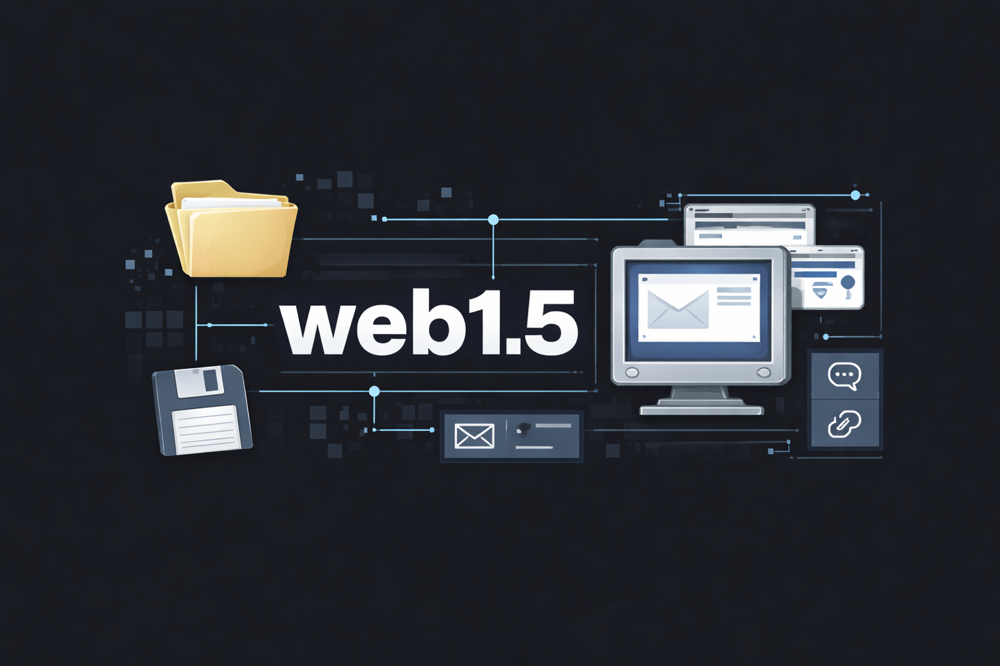
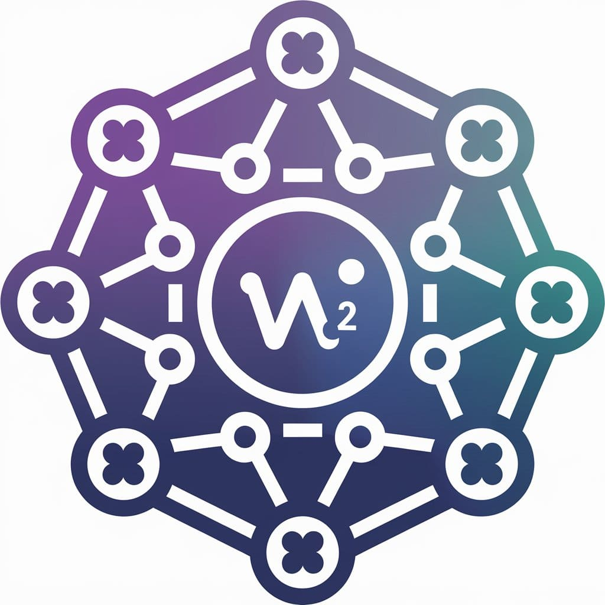
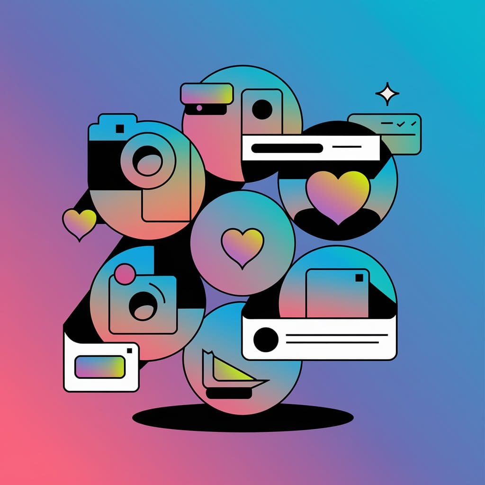
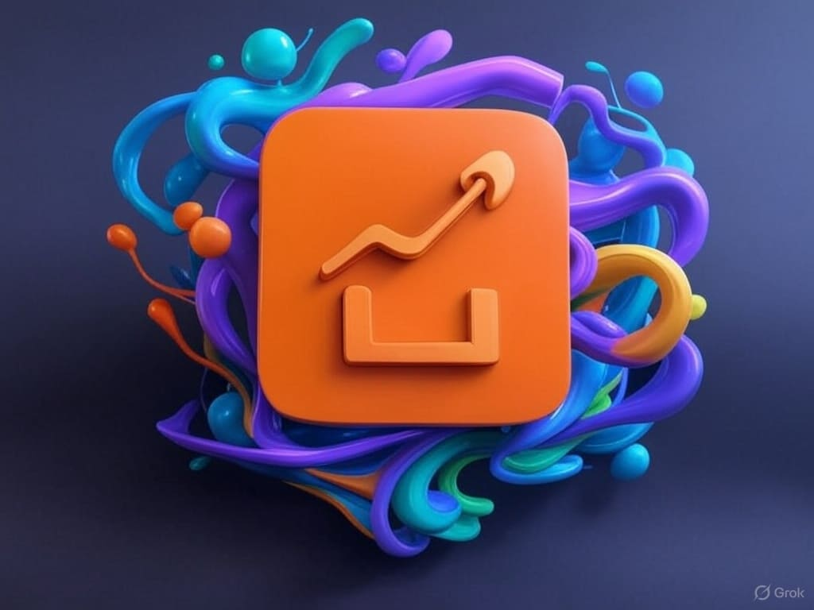
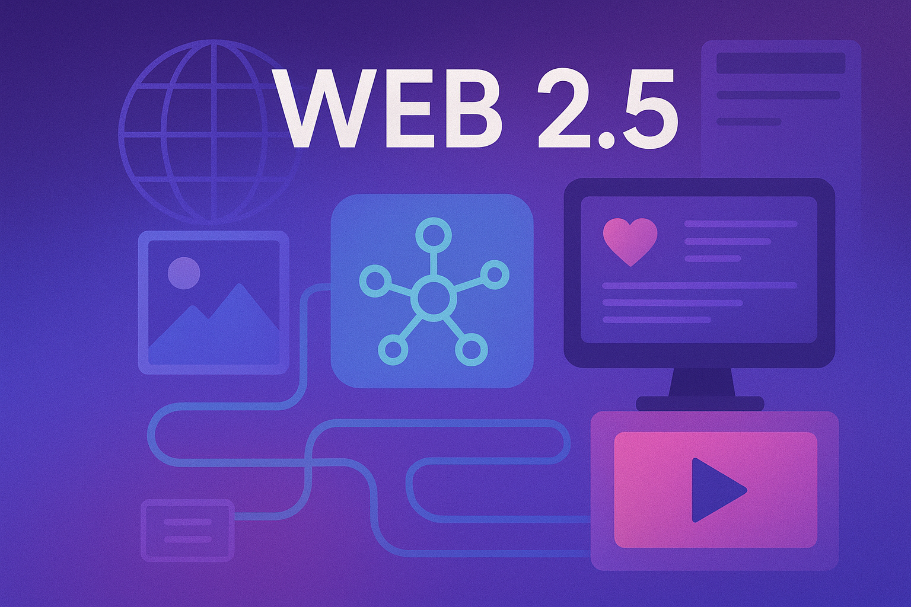
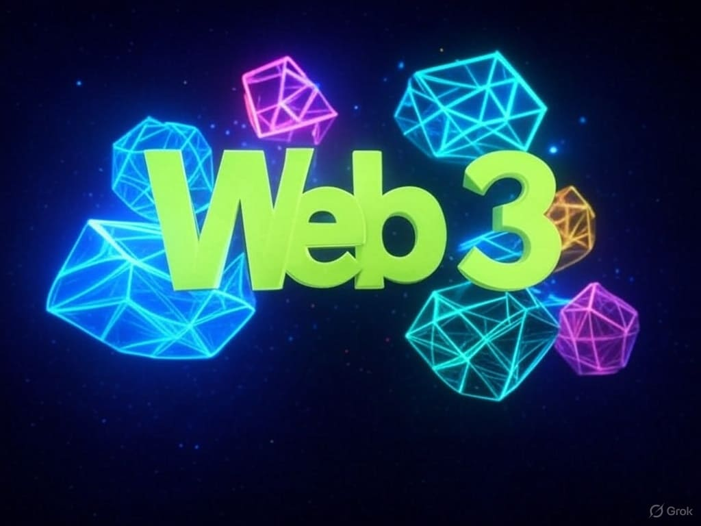
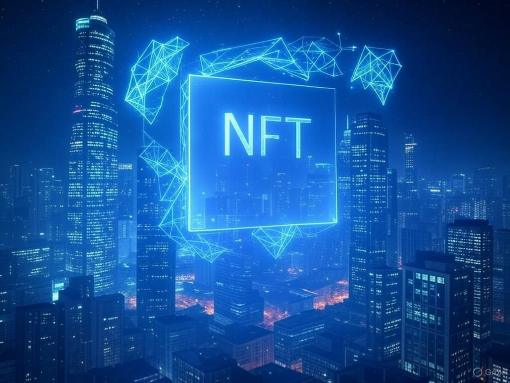
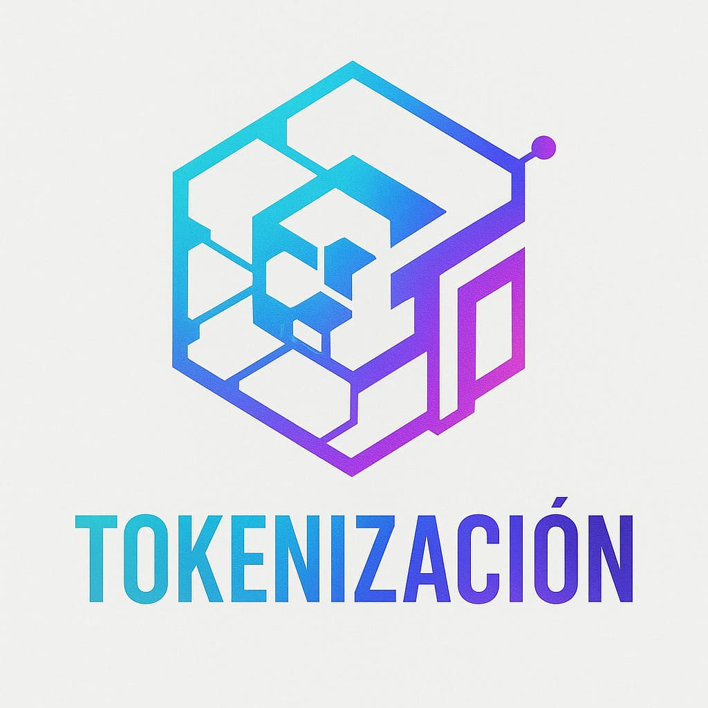

Web
Internet es una red mundial de computadoras interconectadas que permite transmitir información mediante protocolos comunes. Funciona como la infraestructura que hace posible servicios como la Web, el correo electrónico, el streaming y las redes sociales.
La Web es un sistema de información que funciona sobre Internet y permite acceder a páginas conectadas mediante enlaces (hipervínculos). Utiliza tecnologías como HTTP y HTML para mostrar contenido en navegadores.
Web1
La web1 fue la primera etapa de la World Wide Web, caracterizada por sitios estáticos donde los usuarios solo podían consumir información, sin posibilidad de interacción. El contenido era unidireccional, similar a páginas informativas o folletos digitales, y la comunicación se daba principalmente de uno a muchos. Fue el punto de partida del furor de los .com, los portales web y los servicios de suscripción digitales.
El Sitio
ElSitio.com fue uno de los primeros portales web argentinos, activo desde mediados/fines de los años 90. Funcionó como un sitio de contenidos generales que reunía noticias, entretenimiento, cultura, tecnología y servicios, en una época en la que Internet comenzaba a masificarse en el país.
Su propuesta era centralizada y editorial: los contenidos eran producidos y curados por el propio sitio, con escasa o nula participación directa de los usuarios, más allá de formularios, mails o secciones de contacto. En ese sentido, cumplía un rol similar al de otros grandes portales de la época.
Si bien no llegó a ser web1.5, si llegí a incorporar elementos tempranos de transición (formularios, newsletters, secciones temáticas).

Web1.5
La Web 1.5 designa una etapa intermedia entre la Web 1 y la Web 2, caracterizada por el crecimiento de la interacción entre usuarios, el surgimiento de comunidades online, foros y blogs, y una mayor participación en la producción de contenidos. Aunque todavía no predominaban los algoritmos, los feeds ni la monetización masiva, esta fase sentó las bases sociales y culturales de las plataformas de la Web2.
Foros
Los foros son plataformas de discusión organizadas por temas, surgidas en la Web temprana, donde los usuarios intercambian conocimientos, opiniones y experiencias a través de hilos de conversación. Constituyeron una de las primeras formas de comunidad digital estructurada, previas a las redes sociales contemporáneas.
psicoFXP
"Más que un simple foro en línea, PsicoFXP fue el corazón de una de las comunidades virtuales más grandes y vibrantes de habla hispana durante la década del 2000. Un lugar para aprender, compartir, debatir y forjar amistades que trascendieron la pantalla."
Comunidades
Las comunidades online son espacios digitales de interacción social basados en intereses compartidos, colaboración y pertenencia, desarrollados antes de la masificación de las redes sociales. Su dinámica se centra en la participación sostenida y el vínculo entre miembros más que en la visibilidad individual.
3DGames
"3DGames es una Comunidad de Videojuegos, Tecnología, Entretenimiento y más. En 3DGames podes encontrarte con gente que comparte tus intereses, dar a conocer tus ideas y jugar online."
Musiquiatra
"Sitio dedicado al testeo de equipamiento musical."
TuSecreto
"Hoy se cumplen 20 años desde que nació TuSecreto. En 2005, lanzamos esta plataforma con la idea de crear un espacio donde cualquier persona pudiera compartir pensamientos, historias, emociones o confesiones de forma anónima."
Sexy o No
Sexy o No fue un sitio web de entretenimiento de los años 2000 en el que los usuarios podían subir su foto para ser votados como “sexy” o “no”, generando listas y rankings de atractivo dentro de comunidades de habla hispana. Su formato simple y viral lo convirtió en un recuerdo frecuente de esa etapa temprana de interacción social online. Actualmente existen versiones como sexyono.app y sexyono.online que retoman el concepto original, aunque no constituyen continuaciones aparentes directas de la plataforma histórica.
Blogs
Los blogs son plataformas de publicación digital de autoría individual o colectiva, surgidas en la Web temprana, que permiten la difusión periódica de contenidos y la interacción mediante comentarios. Funcionaron como antecedente directo de las prácticas de publicación personal en redes sociales.
La Internet Apesta
La Internet Apesta fue un blog argentino pionero de comienzos de los años 2000, creado por Lupine Wolf, que se destacó por su humor ácido, provocador y su mirada crítica sobre la cultura digital emergente. Como espacio de expresión personal y autoral, anticipó el formato blog en Argentina y representó el espíritu independiente, irreverente y experimental de la Web1.5, previo a la masificación de las redes sociales.
Los Perales
Los Perales fue un blog argentino de comienzos de los años 2000 que retrataba, con humor y tono cotidiano, escenas de la vida familiar y barrial. A través de relatos breves y situaciones reconocibles, el sitio se convirtió en un referente temprano del blog como formato narrativo personal, representativo de la Web1.5 y de una Internet más íntima, autoral y cercana, previa a la lógica de las redes sociales.

Web2
La web2 se caracteriza por la interacción y participación de los usuarios, que dejan de ser solo consumidores para convertirse también en creadores de contenido. Introdujo redes sociales, blogs, foros y plataformas colaborativas, permitiendo una comunicación muchos a muchos y una web más social y dinámica y a su vez la que concentra en la actualidad la mayor base del internet actual en desarrollo web, redes sociales centralizadas y marketing digital.

Redes sociales
Las redes sociales son plataformas digitales que permiten a las personas crear perfiles, conectarse entre sí, compartir contenidos (como textos, imágenes y videos) y participar en comunidades en línea. Facilitan la comunicación, la difusión de información y la interacción entre usuarios, tanto a nivel personal como profesional.
Entre mediados de los 2000 y comienzos de los 2010, en Argentina surgieron diversas tribus urbanas digitales, moldeadas por las plataformas que utilizaban. Siendo los millenials tempranos los floggers, los emos y la escena ligada a la cumbia villera encontraron en redes como Fotolog espacios centrales de expresión visual, identidad y pertenencia.
Estas comunidades convivieron con servicios internacionales ampliamente utilizados como MSN/Windows Live Messenger, MySpace y, más tarde, Facebook y YouTube, que funcionaban como canales complementarios de socialización. En este contexto emergieron fenómenos como la fotocumbia, entendida como una estética visual popular propia del ecosistema digital de la época apoyada en el surgimiento de la cumbia villera de los 2000.
Agustina Vivero
Cumbio es el seudónimo de Agustina Vivero, la primer influencer argentina que alcanzó notoriedad a mediados de los años 2000 a partir de su fotolog, convirtiéndose en una de las figuras más representativas de la tribu urbana flogger.
Su popularidad trascendió el ámbito digital, siendo entrevistada por medios internacionales como The New York Times y El País.
Con el paso del tiempo, logró recibierse como licenciada en comunicación adiovisual, trabajó detrás de cámaras en televisión y en la administración de redes, fundó una agencia de marketing digital Ruido Social Media y una academia formativa Somos Nuestra Propia Red (SNPR).
Taringa!
Taringa! fue una plataforma argentina lanzada en 2004 por Fernando Sanz y adquirida en 2006 por Alberto Nakayama y los hermanos Botbol. Se consolidó como una comunidad colaborativa donde millones de usuarios compartían contenidos y debates, destacándose por su sistema de puntos y rangos.
Con el tiempo, los conflictos por derechos de autor y la aparición de nuevas plataformas debilitaron su relevancia. En 2020 fue adquirida por IOV Labs, que intentó relanzarla con un enfoque Web3 y una app móvil en 2023, sin éxito. Finalmente, el 25 de marzo de 2024, Taringa! cerró de forma definitiva.
Sonico
Sonico fue una red social lanzada en 2007 por la empresa argentina FnBox, que se destacó por promover identidades reales y una moderación activa de perfiles y contenidos.
Su funcionamiento incluía carteleras, mensajes privados, fotos, videos, grupos, eventos, juegos y redes basadas en universidades, escuelas y regiones, junto con un avanzado sistema de privacidad.
Con la expansión de plataformas globales perdió protagonismo y en 2014 fue adquirida por Massive Media, fusionándose con Netlog bajo la marca Twoo, que luego pasó a formar parte de Plenty of Fish (PoF).
MetroFLOG
MetroFLOG fue una red social argentina, muy popular a fines de los años 2000. Inspirada en Fotolog, permitía publicar fotos, personalizar perfiles y recibir comentarios (firmas), además de agregar usuarios como favoritos (efes).
Su funcionamiento estaba centrado en la popularidad: cuantos más favoritos tenía un usuario, mayor era el límite de fotos y comentarios diarios. Con el tiempo incorporó mensajes privados, un muro de estado, personalización avanzada e integración con Windows Live.
El auge de redes sociales mundiales provocó su declive. Tras ser adquirida por Batanga en 2011, el servicio original fue descontinuado alrededor de 2015. Actualmente existen sitios como metroflog.com.ar y metroflog.co que retoman su nombre y estética, funcionando como revivals nostálgicos sin continuidad directa aparente con la plataforma original.
Las redes sociales son la base actual del contenido multimedia de formato vértical en dispositivos móviles y contenido efímero, con versiones de escritorio en formato apaisado, las hay de diversos tipos y estas reformularon la lógica del consumo y la producción multmedia, donde quien produce contenido también consume otros y se vuelve prosumidor, la algoritmia subyacente se ajusta a la personalización, la cual provee el usuario mediante sus interacciones y le sugiere contenido en torno a las mismas, varias de estas utilizan recursos psico-conductuales para captar la atención y mantenerlos en la plataforma dado que al permanecer mas tiempo usandola.
Redes sociales horizontales
Son las redes sociales más utilizadas y populares. Sirven para que los usuarios interactúen entre ellos sin que haya un tema concreto que les delimite. El objetivo principal es conectar personas, facilitar la comunicación y compartir contenido de todo tipo. Ya sean fotos y vídeos o noticias y opiniones.
En este grupo encontramos plataformas como Facebook, Instagram y X. En ellas, los usuarios pueden seguir a sus amistades, a marcas y creadores de contenido, así como participar en conversaciones abiertas.
El uso de las redes sociales horizontales es fundamental en cualquier estrategia de marketing digital, ya que pueden llegar a una audiencia masiva y permiten el uso de múltiples formatos de contenido, como publicaciones o transmisiones en directo.
Redes sociales de mensajería instantánea
Las redes de mensajería son las que se han diseñado para la comunicación en tiempo real. Esto es, que permiten enviar mensajes de texto, voz, imágenes, vídeos e incluso pagos o documentos.
- WhatsApp: con aproximadamente 2.000 millones de usuarios, es la aplicación de mensajería intatánea con características sociales n°1 y de las 3 mas usadas por empresas en atención al cliente por sus posibilidades de automatización con WhatsApp Business y la API de WhatsApp que permite verficar los prefiles empresariales, los grupos, los canales.
- Telegram: con aproximadamente 950 millones de usuarios, es la segunda aplicación de mensajería instantánea con características sociales mas usada y de las mas usadas por empresas para atención al cliente dados los bots para automatización, las comunidades y los canales.
Redes sociales de comercio electrónico
El auge de las compras online ha hecho que la finalidad de las redes sociales se diversifique. Además de los usos que hemos visto, ahora también se incluye la compraventa de productos y servicios. Mercado Libre lidera en América Latina, pero ahora plataformas como Pinterest, o incluso Instagram, han integrado funciones de e-commerce.
- Instagram: con aproximadamente 2.000 millones de usuarios, es la red social n°1 en fotografía por los más jóvenes y de las 3 mas uasadas por empresas en atención al cliente y la mas usada en la venta de e-commerce.
- Pinterest: con aproximadamente 537 millones de usuarios, es la segunda red social de fotografía mas usada y se compone por tableros con ideas para decoración, moda, etc. Es a su vez una de las mas usadas por empresas para el e-commerce.
Mediante estas, los usuarios pueden descubrir y comprar productos sin salir de la aplicación. Estas redes se han convertido en esenciales para los negocios que quieren vender online, dado que combinan la interacción social con una experiencia de compra fluida y que resulta atractiva.
Redes sociales verticales
A diferencia de las horizontales, estas plataformas están enfocadas en comunidades con intereses o profesiones específicas. Suelen ser más especializadas y la interacción está más segmentada.
Un ejemplo es LinkedIn, que se centra en el ámbito profesional y el networking.
Las hay de diversos tipo, siendo las mas populares las rrss cetralizadas de la web2 donde es necesario tener presencia para ser conocido paralelamente a las fediverseras de la web2 y a las descentralizadas de la web3.
- Facebook: con aproximadamente 3.070 millones de usuarios, es la red social mas usada del mundo principalmente por adultos mayores, adultos jóvenes, en menor medida por jóvenes, y es de las 3 mas usadas por empresas en atención al cliente.
- X (antes Twitter): con aproximadamente 586 millones de usuarios, X es la red social de microblog mas usada, enfocada principalmente en política, deporte, entrenemiento, noticias y perfilandose a rivalizar con el resto al imitar el comportamiento de WeChat, una SuperApp que posee múltiples servicios y en menor medida por empresas para atención al cliente.
- Threads: con aproximadamente 300 millones de usuarios, es la segunda red social de microblog mas usada, inspirada en X e integrada desde Instagram, permitiendo a los usuarios la interacción a través de hilos y publicación de contenido multimedia. Aunque es una red social en crecimiento aún no ha sido adeptada por las empresas para la atención al cliente.
- Reddit: con aproximadamente 606 millones de usuarios es la red social mas usada para foro con comunidades (subreddits) sobre todo tipo de temas, desde entretenimiento hasta debates, noticias y cultura de internet.

Marketing Digital
En el mercado del arte y otros sectores, el marketing o mercadotecnia digital puede derivar en disciplinas como el community management (gestión de comunidades), y el copywriting (escribir textos persuasivos con el objetivo de influir en el lector para que realice una acción concreta).
Recientemente el marketing de influencia ha comenzado a transformarse a partir del surgimiento del defluencing, una práctica que prioriza la transparencia, la crítica al consumo excesivo y la recomendación honesta por sobre la promoción directa.
En paralelo, el avance de la inteligencia artificial y los sistemas de recomendación introduce nuevas formas de agenciamiento, donde algoritmos, datos y modelos automatizados participan activamente en la construcción de confianza, visibilidad y decisión de compra, redefiniendo el rol del influencer, hacia ecosistemas híbridos entre personas, plataformas e inteligencia artificial.
Kids Corp
"Un equipo único de expertos en toda América dedicados a la industria U18. Construimos tecnología + data respaldada por servicios para potenciar marcas, anunciantes & creadores en el mundo digital."
Foton Games
"Foton.Games es una empresa de videojuegos y contenido inmersivo dedicada a la creación de mundos y la narración de historias." Traducido con Kagi Translate.
Play Bold
"Somos Play Bold. Tu agencia de marketing digital especializada en videojuegos. Más de 10 años de experiencia en desarrollo de juegos, dibujos animados y publicidad nos avalan Diseñamos e implementamos la estrategia de comunicación, prensa y marketing que tu videojuego y estudio necesitan."
Desarrollo Web
La programación es la creación de un programa basada en un lenguaje, una sintaxis y un orden específico para llevar a cabo una acción. El desarrollo es mas que programar, abarca desde el brainstorming o lluvia de ideas, el bocetado, el diseño UI/UX, la prueba y depuración del código, la documentación y finalmente el lanzamiento. Una de las más relevantes para las artes multimediales es el desarrollo web, que consiste en la creación de sitios y aplicaciones web accesibles desde internet mediante un navegador web.
El desarrollo web se divide en dos partes principales y se articulan en conjunto:
- Front-end: La interfaz visual e interactiva con la que los usuarios interactúan.
- Back-end: La gestión de servidores, bases de datos y la lógica detrás del funcionamiento de la aplicación.
- Full Stack: La combinación de front-end y back-end, permitiendo desarrollar proyectos completos de manera integral.
Los sitios web ofrecen una alternativa versátil para la distribución de contenido. En lugar de depender de plataformas como Steam o itch.io para videojuegos, Microsoft Store para Windows y Google Play Store para Android, App Store y Setapp para MacOS e IOS (las cuales suelen cobrar comisiones). Un sitio web propio permite mayor independencia y control sobre la distribución del contenido.
Cooperativa Alternativa Laboral Trans
"Somos una cooperativa de trabajo especializada en el diseño y desarrollo de soluciones web, con la gestión de RRSS conformada por personas trans y creada en Argentina."

Web2.5
Actualmente, estamos en un período de transición entre la Web2 y la Web3 con algunos modelos híbridos denominados web2.5 caracterizados por la interoperabilidad. Han surgido redes federadas como Mastodon (fediverso, Web2) y plataformas descentralizadas no federadas como Bluesky, que aún pertenecen a la Web2 pero se diferencian de las redes centralizadas tradicionales como Facebook, YouTube, Instagram, TikTok, X, etc.
Por otro lado, aplicaciones y protocolos propios de la Web3, como Bitcoin, Ethereum y World (exWorldcoin), han coexistido con la Web2 durante años, utilizando su infraestructura para operar y comunicarse.
Fediverso
El fediverso es un ecosistema descentralizado de redes sociales que pueden comunicarse entre sí mediante protocolos comunes. Su nombre proviene de la combinación de "federación" y "universo". Aunque forma parte de la Web2, comparte algunas características con la Web3, como la descentralización, pero no se basa en la cadena de bloques o blockchain ni en contratos inteligentes o smart contracts.
Características del fediverso:
- Abierto: No depende de una sola empresa.
- Descentralizado: Cada plataforma funciona en servidores independientes.
- Libre y gratuito: En su mayoría, las redes que lo componen son de código abierto y sin costos obligatorios.
Funcionalidades del fediverso
- Los usuarios pueden interactuar, compartir contenido y visualizar publicaciones de diversas plataformas con un solo perfil.
- Utiliza protocolos comunes como ActivityPub, Matrix y XMPP, lo que facilita la interoperabilidad.
- Se encuentra entre la descentralización total de la Web3 y la estructura más centralizada de la Web2.
Ejemplos de plataformas del fediverso:
- Redes sociales: Mastodon, Pixelfed, Lemmy, Friendica.
- Video y blogs: PeerTube, WordPress (compatible con ActivityPub).
- Otras: Threads de Meta, que, aunque sigue siendo centralizada, es compatible con ActivityPub.
Existen también redes sociales descentralizadas que no forman parte del fediverso ni de la Web3, como Bluesky, Manyverse y Trust Cafe. Estas operan con protocolos propios y servidores independientes, pero sin federación estándar.

Web3
La web3, también llamada Internet del Valor (IoV, Internet of Value), representa la evolución hacia una internet descentralizada basada en tecnologías como blockchain, criptomonedas, contratos inteligentes y aplicaciones descentralizadas (dApps).
Una de sus principales innovaciones es el reparto del valor generado, permitiendo que los usuarios sean recompensados por su actividad. Modelos como "play to earn" (P2E) o "engage to earn" (E2E) han transformado la manera en que las plataformas interactúan con sus comunidades.
Modelos de recompensa en la Web3:
- Create to Earn (C2E): Premia a creadores de contenido (arte digital, música, videos, etc.) con tokens o NFTs.
- Ejemplos: Mintable, SuperRare, Zora.
- Engage to Earn (E2E): Recompensa la interacción en redes sociales descentralizadas (compartir, comentar, reaccionar).
- Ejemplos: Farcaster, Steemit, Lens Protocol, Likecoin.
- Build to Earn (B2E): Incentiva a desarrolladores y diseñadores a construir activos digitales en plataformas descentralizadas.
- Ejemplos: Decentraland, The Sandbox.
- Watch to Earn (W2E): Premia a los usuarios por ver contenido audiovisual.
- Ejemplos: Theta Network, Verasity, DeTube.
- Listen to Earn (L2E): Recompensa por consumir música y podcasts.
- Ejemplos: Audius, Choon.
- Write to Earn (W2E): Incentiva la creación de contenido escrito.
- Ejemplos: mirror.xyz, Publish0x, ReadCash, Sigle.io, Bounty0x.
En resumen, los modelos C2E y E2E difieren en su enfoque:
- C2E premia la creación de contenido original.
- E2E recompensa la interacción con contenido existente.
Los videojuegos han incorporado una nueva característica: el modelo de play to earn o P2E (jugar para obtener), que permite a los jugadores obtener recompensas monetarias en forma de NFT por cada misión cumplida. Este modelo no solo busca fomentar una estimulación constante, sino también ofrecer una recompensa real por el valor que los usuarios generan al interactuar con el producto.
OLA GG
"Ola GG es una comunidad enfocada en el mundo del gaming, que ofrece un espacio para que los gamers de Latam se conecten, jueguen y crezcan tanto personal como profesionalmente."

NFTs
Los NFTs (Non-Fungible Tokens o fichas no fungibles) son activos digitales únicos registrados en blockchain. Su principal uso ha sido en arte digital y coleccionables, pero también pueden aplicarse en identidad digital, música, videojuegos y más.
Para 2025, el mercado de los NFT se encuentra en una etapa de fuerte contracción tras el auge especulativo de los años anteriores. Aunque el volumen y el interés general disminuyeron, los NFT continúan existiendo en nichos específicos vinculados a la utilidad, la cultura digital, las comunidades y las experiencias, dejando atrás el modelo puramente especulativo y consolidándose como un recurso experimental dentro del ecosistema Web3.
La blockchain o cadena de bloques funciona como un libro contable público e inmutable que verifica la autenticidad y propiedad de estos activos. Aunque los archivos digitales pueden ser copiados, la blockchain certifica quién es su dueño original.
Artbag
"BAG nace para convertirse en la red #1 de arte NFT latinomericano, donde artistas, partners, coleccionistas, curadores y público en general encuentran un lugar en común y un punto de encuentro para disfrutar de la pasión que los une: el arte digital."
Enigma
"La solución web3 para el mundo del entretenimiento."
UXArt
"Uxart es un grupo creativo con ADN disruptivo y tecnológico, en exploración constante de experiencias de alto impacto. Enfocados en nuevas estrategias para ser implementadas a través de los nuevos medios digitales."
Givoa
"Desde el año 2012 hemos trabajado en mas de 250 importantes proyectos de peritaje, atribución y valoración de obras de arte y antiguedades."
CryptoArg
"Cryptoarg es un colectivo de arte argentino que busca encontrar las expresiones artísticas más avanzadas y únicas dentro del espacio cripto." Traducido con Kagi Translate

Tokenización
Es el proceso de representar activos físicos o digitales como tokens en blockchain, permitiendo fraccionar su valor y facilitar el acceso al mercado. Esto democratiza la inversión en arte, bienes raíces y otros activos tradicionalmente poco accesibles.
TokenizArt
"Mediante una combinación customizada de Blockchain & Internet of Things resolvemos la problemática ancestral en el mundo del arte: La generación de una provenance perpetua e inmutable."
Web4 y Web5
Los conceptos de Web4 y Web5 no se consolidaron como etapas diferenciadas, ya que muchos de sus postulados fueron absorbidos por la Web3 o implementados dentro de infraestructuras de la Web2 avanzada. Por este motivo, suelen considerarse categorías especulativas más que fases históricas claramente definidas.